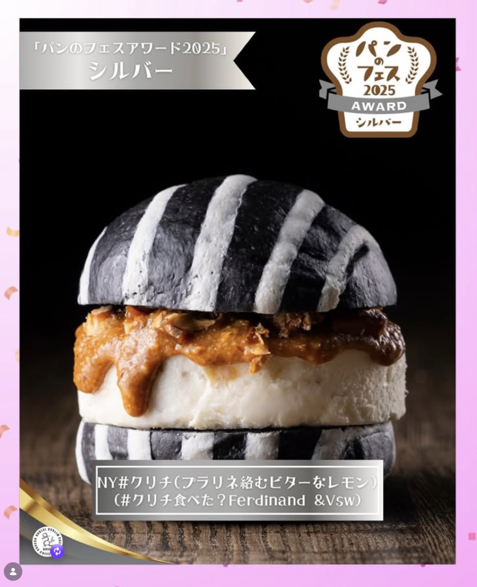
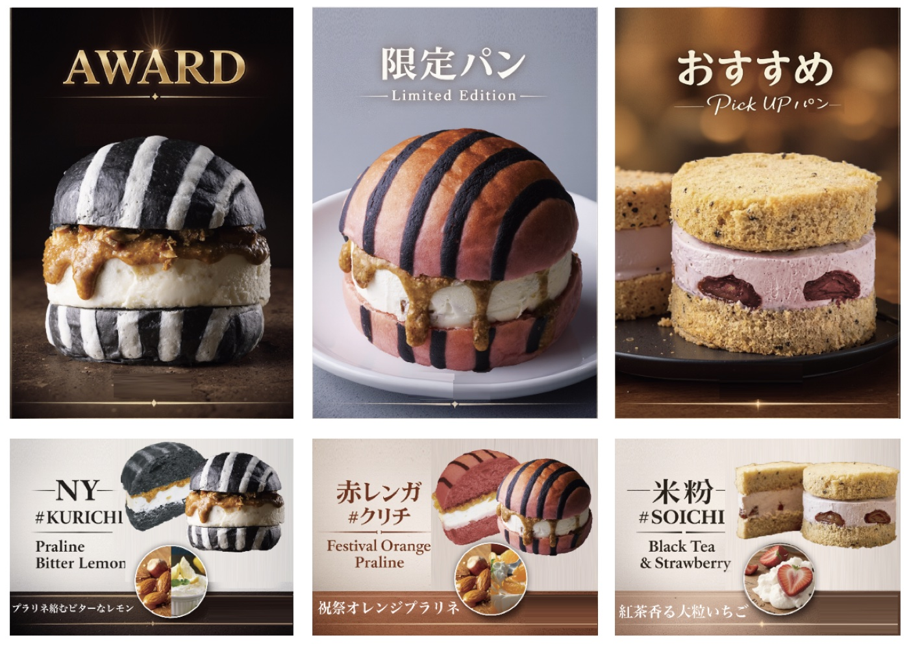

おかげさまで
横浜パンのフェス 2026
シルバー賞を受賞しました🥈✨
応援してくれたみんなのおかげです。
本当にありがとうございます。
クリチを食べてくれた方、
投票してくれた方、
支えてくれた仲間たち、
すべての方に感謝です。
🥈 横浜パンのフェス 2026 シルバー賞
2025：ブロンズ 🥉
↓2026：シルバー 🥈
一段、のぼりました。次はグランプリ🔥
「横浜パンのフェス 2026」は、全国のパン屋・フード出店者が一堂に会するパンの祭典で、来場者の投票によって決まるアワードです。横浜赤レンガ倉庫で開催され、多くのパンファンの皆さまが足を運んでくださいました。
🍔 出店した3種類の #クリチ

今回出品したのは以下の3種。それぞれ異なる個性を持った、クリチならではのラインナップです。
① NY#クリチ（プラリネ絡むビターなレモン）
- バンズ：黒×白ストライプ / 竹炭バンズ（黒）× 白いライン（小麦粉生地）
- フィリング：アーモンドとクルミのプラリネ、レモンピール入りクリームチーズ
- 味の特徴：ビターなレモンの香り / ナッツの香ばしさとコク / 甘さ控えめで大人向け
※プラリネ＝ナッツとキャラメルをペースト状にしたもの。香ばしさ・食感・コクを加える #クリチ の重要要素。
② 赤レンガ#クリチ（祝祭のオレンジプラリネ）
- バンズ：赤×黒ストライプ / ビーツのバンズ（赤）× 黒ライン（竹炭入り生地）
- フィリング：アーモンドとクルミのプラリネ、オレンジピール入りクリームチーズ
- 味の特徴：柑橘の明るい酸味 / ナッツのコクとのコントラスト / 見た目と味のインパクト重視
③ 米粉#ソイチ（紅茶香る大粒いちご）
- バンズ：紅茶風味の米粉バンズ（アールグレイ茶葉入り）
- フィリング：豆乳ベースのクリームチーズ（ソイチ）に苺ピューレ、大粒いちご
- 味の特徴：小麦不使用 / 乳製品控えめ / やさしい甘さ・軽い口当たり
※ソイチ＝クリームチーズ × 豆乳クリームをベースにした新シリーズ。軽さ・植物性・次世代スイーツ枠。
会場では多くの皆さまにお手に取っていただき、全フレーバー完売となりました。お買い求めいただけなかった皆さまには大変申し訳ございませんでした。
📸 受賞の様子
🙏 ありがとうございました
クリチというIPが少しずつ育ってきているのを感じます。
これからももっと面白く、もっと美味しく。
次はグランプリを目指します。🔥
クリチを食べてくれた方、投票してくれた方、支えてくれた仲間たち、すべての方に感謝です。